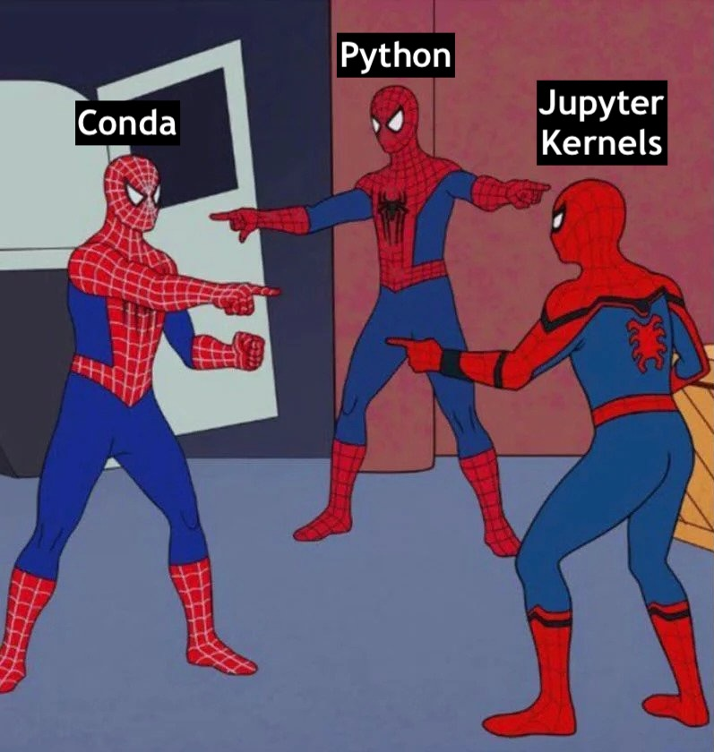
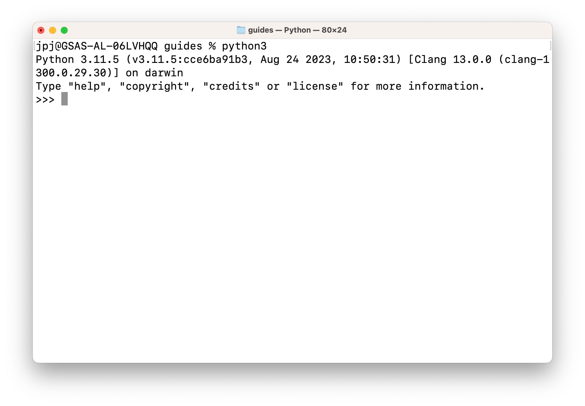
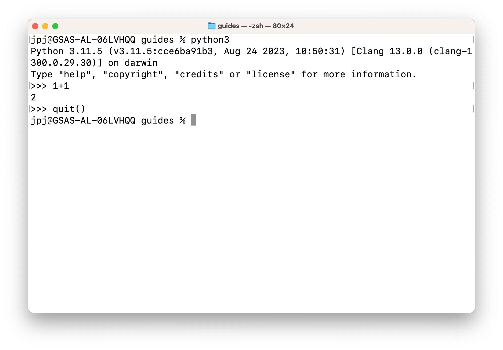
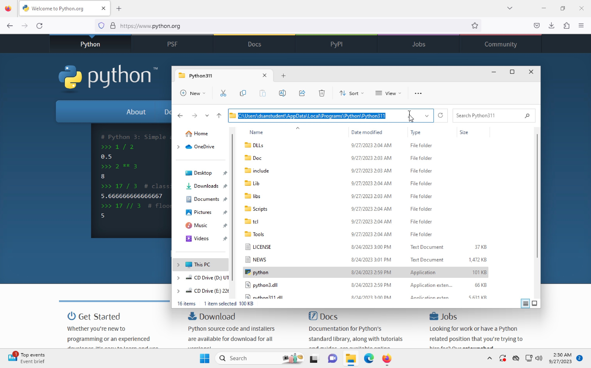

Managing Python Installations

This writeup is intended to help students who are having issues with multiple Python installations existing on their computer at the same time. This can give rise to issues when trying to install and use third-party libraries (meaning, libraries which are not built into Python).
For example, you might encounter the following issue:
- You execute
pip install numpyin your terminal, and it shows that the library has successfully been installed. - You open a Jupyter notebook to begin using
numpy, for a homework assignment for example, and run a cell containing the codeimport numpy as np - The output from this Jupyter cell tells you that
numpyis not installed:
ModuleNotFoundError Traceback (most recent call last)
<ipython-input-1-c177332b26a4> in <cell line: 1>()
----> 1 import numpy as np
ModuleNotFoundError: No module named 'numpy'- So, you say, that’s weird, maybe it didn’t install after all? And you go back to your terminal and retry
pip install numpy, only to get a message saying it’s already installed:
Requirement already satisfied: numpy in /usr/local/lib/python3.10/dist-packages (1.23.5)- And yet, you return to your Jupyter notebook, try executing the cell containing
import numpy as npagain, and once again get the same error:
ModuleNotFoundError Traceback (most recent call last)
<ipython-input-1-c177332b26a4> in <cell line: 1>()
----> 1 import numpy as np
ModuleNotFoundError: No module named 'numpy'If you have encountered this issue, there is a short-term solution which can sometimes fix it temporarily (if you really need to run the Python code right now), but it indicates that something is wrong with the way Python, Conda, and/or Jupyter are set up on your system1, and you should really take the time to run through the sustainable solution later on in the writeup.
The Short-Term, Temporary Solution
If you are panicking about this issue, and you really need to run the Python code right now, the following approach will temporarily “fix” the issue maybe 95% of the time:
Add a cell to your notebook (as in, don’t run this command in the terminal) containing the following line, above the cell where you are trying to import numpy for example, and execute this cell. In 95% of cases, this will allow you to import numpy as np and continue with your work:
!pip install numpyCrawling Towards a Longer-Term, Sustainable Solution
This type of issue can be pretty tough to fix completely, so that it never happens again, but in most cases I think we can minimize the likelihood of it happening and affecting our work if we understand why it happens.
In general, the issue comes from some number of “mismatches” between versions of the Python interpreter, on the one hand (on Windows, for example, this is a program literally just called python.exe), and things that use versions of Python on the other (Jupyter, for example, and/or VSCode). Ensuring that all of the different versions of Python are “synced up” correctly with these things that use Python (Jupyter, VSCode) gets even exponentially trickier when you create environments within a given Python installation, since now you have to ensure that Jupyter is running the commands you type into a cell within the correct environment of the correct version of Python that you want it to use.
So, if you are just starting with Python, I highly recommend starting from the following barebones setup (we will learn what a lot of these terms mean, and how to “revert” to this setup if you already have a different one, in the next section):
A single version of Python installed to a particular path on your computer that you write down somewhere, so that you know exactly which Python interpreter is being called when you type the
pythoncommand in your terminal, for example.- On Unix/Linux/MacOS, you can find out what executable at what path the terminal is running when you issue the command
pythonby issuing the following command:
which pythonor (if that produces the output
python not found)which python3This should output a filepath which tells you the full pathway to the particular
pythonexecutable that your terminal runs whenever you typepython(orpython3). When I use UTM to create a brand-new Mac OSX installation without changing any settings, for example, it sayspython not foundif I executewhich pythonin the Terminal, but produces the following output if I excutewhich python3:/usr/bin/python3This says, literally, that whenever I type
python3into the Terminal, it immediately goes into the root directory of my computer (/), then goes into a subfolder calledusr, then a subfolder of/usrcalledbin, within which there is an executable (program) called justpython(without the.exe, which is what the program would be named on Windows).- On Unix/Linux/MacOS, you can find out what executable at what path the terminal is running when you issue the command
Don’t install
condauntil you are comfortable with the basics of (a) how to run.pyfiles, (b) how to issue commands in an python shell (which is the program you see running, with a prompt at the bottom of your Terminal screen starting with>>>into which you can type Python commands, if you just open the Terminal and execute the commandpythonorpython3without any additional arguments—see Figure 1), and (c) how to link your Jupyter notebooks with the particular version of Python you have installed- I know that this goes against what most data science courses/teachers suggest, and I’m happy to have my mind changed, but I suggest this because Installing
condameans installing a second Python installation onto your computer: if you have a Mac this is for sure the case, since Macs actually come with Python pre-installed, and if you have Windows it is not always true but might be true, since some versions of Windows also come with Python pre-installed. For many of the students who I worked with on the above issues it turned out (after lots of digging) that their Jupyter or VSCode setup was using the Anaconda version of Python, while executing thepythonorpipcommand in their Terminal led OSX to run a completely different (non-conda) version of Python (usually the one that comes shipped with OSX).
- I know that this goes against what most data science courses/teachers suggest, and I’m happy to have my mind changed, but I suggest this because Installing

python or python3 without any additional arugments. To exit this shell and return to the “normal” Terminal prompt, execute the Python command quit() within this Python shell, as shown in Figure 2
1+1) and quit the Python shell using quit(), returning me back to my Terminal (shell), where I can issue Unix commands at the prompt (after the % portion at the bottom) like ls or cd.Windows Specifics
Opening my Windows 11 Virtual Machine, I find that Python does not seem to be pre-installed (again, it can differ based on what specific version of Windows you have, or what company you buy your PC from, in my experience), since neither the python or python3 commands work when I open PowerShell. So, I went ahead and installed Python directly from the Python website (rather than the Anaconda version, for example), and it installed Python in the following location (my username on the VM is dsanstudent, so on your installation wherever you see dsanstudent replace that with your Windows username):
C:\Users\dsanstudent\AppData\Local\Programs\Python\Python311\python.exeWhich is pretty long and difficult to remember, plus by default it did not add this to my Windows PATH Environment Variable, so I had to do it manually (tldr: press start, type “Environment Variables”, and use the UI that pops up to edit the PATH string, adding C:\Users\dsanstudent\AppData\Local\Programs\Python\Python311 to the end of it). See Figure 3 for a screenshot of the contents of this location when I browse to this path using Windows Explorer.

python.exe executable, when I downloaded and installed Python version 3.11 on a brand new Windows 11 Virtual Machine.So What Are All These Different Moving Parts?
A lot of confusion can also be avoided if we always keep in mind the basics of what each “piece” of the Python development environment actually is/actually does:
Python
At its core, Python is just an executable program (hence the python.exe filename in Windows) that takes in Python files (.py files) and runs them. Anything beyond this can be thought of as an extension that is built on top of this core functionality.
pip
As external, third-party libraries like NumPy, Pandas, Jupyter, and so on became more and more central to the Python development process, the people who created Python also created pip, which stands for “pip Installs Packages”2.
pip, sadly, can also become “delinked” from the version of Python you want to use: if you have both Python 3.9 and Python 3.11 installed on your computer, for example, you need to be careful about which of these installations is having packages installed into it when you run pip install (and similarly for pip3).
Anaconda
Anaconda is a third-party package manager for Python, which works a lot better than pip in many ways, and comes with lots of nice data science packages built-in, but has the drawback that it exists somewhere on your computer separately from the “standard” Python installation if (a) you bought a Mac/PC with Python pre-installed, or (b) you downloaded Python from the python.org website.
Jupyter
Jupyter is essentially a wrapper around Python (whether “normal” Python or the Anaconda version of Python, or both), which takes the Python code that you enter into code cells and runs them within a Python kernel—basically an instance of the Python executable that sits and waits for commands to come in from Jupyter, runs them, and sends the output of the commands back to Jupyter so that Jupyter can show that output in your notebook, underneath the code cell.
VSCode
VSCode: Just like how Python is just a .py-file-runner at its core, with fancy stuff built on top of it, VSCode is just a text editor at its core, with fancy stuff built on top of it (especially once you add extensions, like the Python or Jupyter or Quarto extensions we’re using in this class).
Summary
There is no deterministic fix-all algorithm for making sure that (e.g.) the version of Python used as a kernel in Jupyter is the same as the version of Python used when you click the “run file” button at the top of a .py file in VSCode, or that either of these are the same as the version of Python used when you execute the python command in your Terminal, for example, but I hope that maybe something I’ve included here can help you navigate this undeniably awful, headache-inducing, messy setup 🥴 Really, the best thing you can do if you keep running into these issues is to email me or schedule an office hours appointment, and we can work through the issue together 😸
Footnotes
It doesn’t mean you did something wrong! It’s just a result of the way that programs/apps get installed on a computer: despite the fact that computers have now existed for many decades, there is still no easy way for operating systems to keep track of (e.g.) which version/type of Python you’re hoping to run when you type
pythonin your terminal, or when you run a command in Jupyter.↩︎Computer scientists love recursive acronyms like this: if you’ve heard of the language PHP, that stands for PHP: Hypertext Preprocessor 🤓↩︎